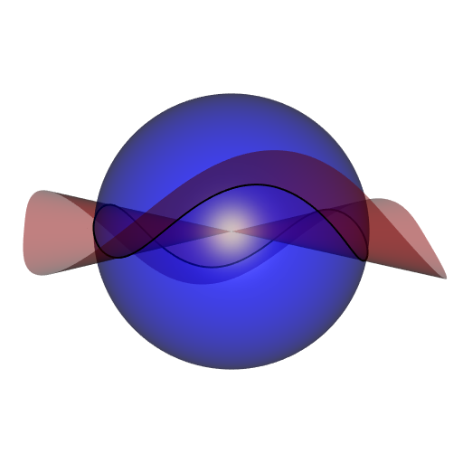

Another Hopf torus
Recall that a Hopf torus is a two-dimensional object in the 4D space defined by a profile curve: a closed curve on the unit sphere. When mapping it to the 3D space with the stereographic projection, we can obtain a beautiful object, or an ugly one, depending on the choice of the profile curve.
Here, we will see the Hopf torus defined by this profile curve:

This is the intersection of the unit sphere with a cubical cone, the isosurface of equation \(x^2 + y^2 + z^2 = 0\). First, I obtained a mesh of this surface thanks to the rmarchingcubes package:
library(rgl)
library(rmarchingcubes)
# cubical cone ####
f <- function(x, y, z) {
x^3 + y^3 + z^3
}
x_ <- y_ <- z_ <- seq(-1.05, 1.05, length.out = 150L)
Grid <- expand.grid(X = x_, Y = y_, Z = z_)
voxel <- array(with(Grid, f(X, Y, Z)), dim = c(150L, 150L, 150L))
surf <- contour3d(voxel, level = 0, x_, y_, z_)
coneMesh <- tmesh3d(
vertices = t(surf[["vertices"]]),
indices = t(surf[["triangles"]]),
normals = surf[["normals"]]
)Then I obtained the intersection with the unit sphere thanks to the clipMesh3d and getBoundary3d functions of the rgl package:
# intersection with unit sphere ####
sphereMesh <- Rvcg::vcgSphere(subdivision = 5L)
mesh <- clipMesh3d(
sphereMesh, fn = f, minVertices = 20000L
)
boundary <-
getBoundary3d(mesh, sorted = TRUE, color = "black", lwd = 2)
# plot ####
open3d(windowRect = 50 + c(0, 0, 512, 512), zoom = 0.9)
shade3d(coneMesh, color = "red", alpha = 0.5, polygon_offset = 1)
shade3d(sphereMesh, color = "blue", alpha = 0.5, polygon_offset = 1)
shade3d(boundary)The curve has not the required orientation of a nice profile curve. Its axis of symmetry is directed by \((1,1,1)\), and we need \((0,0,1)\) instead. So one has to rotate the curve. To do so, I use an exported function from the cgalMeshes package, namely quaternionFromTo. It will return a unit quaternion corresponding to the desired rotation. I already talked about this way to obtain a rotation sending a given vector to another given vector, here.
# get points at the intersection and rotate them ####
pts <- boundary[["vb"]][-4L, boundary[["is"]][1L, ]]
q <- cgalMeshes:::quaternionFromTo(c(1, 1, 1)/sqrt(3), c(0, 0, 1))
R <- onion::as.orthogonal(q)
gamma0 <- t(R %*% pts)[, c(3L, 2L, 1L)]Now let’s introduce a function which creates a mesh of the Hopf torus defined by a discretized curve, such as our matrix of points gamma0. Again, I use an exported function from cgalMeshes, namely meshTopology, which returns the incidences between the vertices of the mesh.
# Hopf torus mesh from a discrete curve `gamma` ####
hMesh <- function(gamma, m) {
nu <- nrow(gamma)
uperiodic <- TRUE
u_ <- 1L:nu
vperiodic <- TRUE
nv <- as.integer(m)
v_ <- 1L:nv
R <- array(NA_real_, dim = c(3L, nv, nu))
for(k in 1L:nv) {
K <- k - 1L
cosphi <- cospi(2*K/m)
sinphi <- sinpi(2*K/m)
for(j in 1L:nu) {
p1 <- gamma[j, 1L]
p2 <- gamma[j, 2L]
p3 <- gamma[j, 3L]
yden <- sqrt(2 * (1 + p1))
y1 <- (1 + p1) / yden
y2 <- p2 / yden
y3 <- p3 / yden
x1 <- cosphi * y3 + sinphi * y2
x2 <- cosphi * y2 - sinphi * y3
x3 <- sinphi * y1
x4 <- cosphi * y1
R[, k, j] <- c(x1, x2, x3)/(1 - x4)
}
}
vs <- matrix(R, nrow = 3L, ncol = nu*nv)
tris <- cgalMeshes:::meshTopology(nu, nv, uperiodic, vperiodic)
tmesh3d(
vertices = vs,
indices = tris,
homogeneous = FALSE
)
}If you run hMesh(gamma0, m) with m large enough, here is the mesh you will obtain (actually you have to close gamma0, that is to say you have to use rbind(gamma0, gamma0[1L, ])):

Finally I did another animation. The Hopf torus whose profile curve is the equator of the unit sphere is nothing but an ordinary torus after the stereographic projection. Then, I scaled the \(x\)-coordinates of gamma0 continuously from a factor zero to a positive factor and I plotted the (stereographic projection of the) Hopf torus corresponding to each scaling. In this way the ordinary torus is smoothly transformed to the previous Hopf torus:

The code:
h_ <- seq(0, 2, length.out = 60L) # scaling factors
open3d(windowRect = 50 + c(0, 0, 512, 512))
bg3d(rgb(54, 57, 64, maxColorValue = 255))
view3d(0, 0, zoom = 0.75)
for(i in seq_along(h_)) {
gamma <- gamma0
gamma[, 1L] <- h_[i] * gamma[, 1L]
# normalize so that the points are on the sphere
gamma <- gamma / sqrt(apply(gamma, 1L, crossprod))
gamma <- rbind(gamma, gamma[1L, ])
mesh <- hMesh(gamma, 500L)
mesh <- addNormals(mesh, angleWeighted = FALSE)
shade3d(mesh, color = "firebrick4")
snapshot3d(sprintf("zzpic%03d.png", i), webshot = FALSE)
clear3d()
}
# mount the animation ####
library(gifski)
pngFiles <- Sys.glob("zzpic*.png")
gifski(
png_files = c(pngFiles, rev(pngFiles)),
gif_file = "HopfTorusCubicalConeToTorus.gif",
width = 512,
height = 512,
delay = 1/15
)
file.remove(pngFiles)